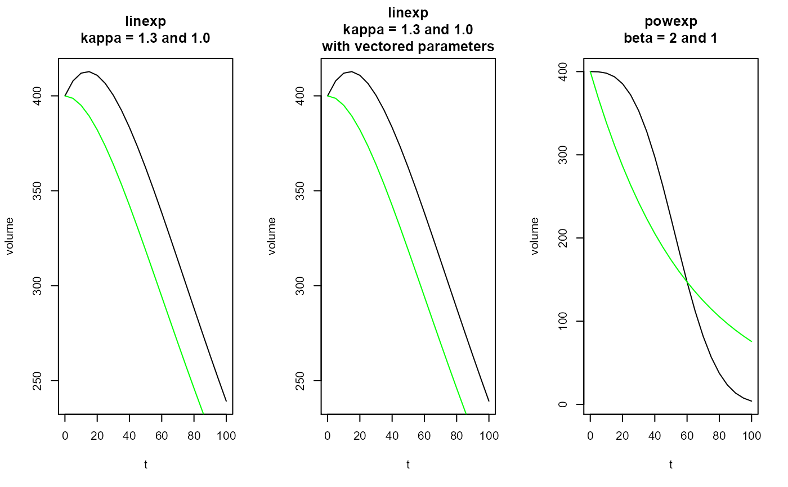

The linexp and the power exponential (powexp) functions can
be used to fit gastric emptying curves.
linexp(t, v0 = 1, tempt = NULL, kappa = NULL, pars = NULL) linexp_slope(t, v0 = 1, tempt = NULL, kappa = NULL, pars = NULL) linexp_auc(v0 = 1, tempt = NULL, kappa = NULL, pars = NULL) powexp(t, v0 = 1, tempt = NULL, beta = NULL, pars = NULL) powexp_slope(t, v0 = 1, tempt = NULL, beta = NULL, pars = NULL) linexp_log(t, v0 = 1, logtempt = NULL, logkappa = NULL, pars = NULL) powexp_log(t, v0 = 1, logtempt = NULL, logbeta = NULL, pars = NULL)
| t | Time after meal or start of scan, in minutes; can be a vector. |
|---|---|
| v0 | Initial volume at t=0. |
| tempt | Emptying time constant in minutes (scalar). |
| kappa | Overshoot term for linexp function (scalar). |
| pars | Default NULL. If not NULL, the other parameters with exception
of |
| beta | Power term for power exponential function (scalar). |
| logtempt | Logarithm of emptying time constant in minutes (scalar). |
| logkappa | Logarithm of overshoot term for linexp function (scalar). |
| logbeta | Logarithm of power term for power exponential function (scalar). |
Vector of length(t) for computed volume.
The linexp function can have an initial overshoot
to model secretion.
vol(t) = v0 * (1 + kappa * t / tempt) * exp(-t / tempt)
The powexp function introduced by Elashof et al. is
montonously decreasing but has more freedom to model details in the
function tail.
vol(t) = v0 * exp(-(t / tempt) ^ beta)
The _slope functions return the first derivatives of linexp
and powexp.
Use the _log functions to enforce positive parameters
tempt and beta. Rarely required for gastric emptying curves.
gastemptfunc,Functions for gastric emptying analysis,Functions for gastric emptying analysis — gastemptfunc,Source:R/fitfuncs.r,gastemptfunc.Rd,character(0),c("gastemptfunc", "linexp", "linexp_slope", "linexp_auc", "powexp", "powexp_slope", "linexp_log", "powexp_log"),character(0),list(title = "Description", contents = "The
"),list(description = "The linexp and the power exponential (powexp) functions can\nbe used to fit gastric emptying curves."),linexp(t, v0 = 1, tempt = NULL, kappa = NULL, pars = NULL) linexp_slope(t, v0 = 1, tempt = NULL, kappa = NULL, pars = NULL) linexp_auc(v0 = 1, tempt = NULL, kappa = NULL, pars = NULL) powexp(t, v0 = 1, tempt = NULL, beta = NULL, pars = NULL) powexp_slope(t, v0 = 1, tempt = NULL, beta = NULL, pars = NULL) linexp_log(t, v0 = 1, logtempt = NULL, logkappa = NULL, pars = NULL) powexp_log(t, v0 = 1, logtempt = NULL, logbeta = NULL, pars = NULL),list(list(name = "t", description = "linexpand the power exponential (powexp) functions can\nbe used to fit gastric emptying curves.Time after meal or start of scan, in minutes; can be a vector.
"), list(name = "v0", description = "Initial volume at t=0.
"), list(name = "tempt", description = "Emptying time constant in minutes (scalar).
"), list(name = "kappa", description = "Overshoot term for linexp function (scalar).
"), list(name = "pars", description = "Default NULL. If not NULL, the other parameters with exception\nof
"), list(name = "beta", description = "tare not used and are retrieved as named parameters\nfrom the numeric vector pars instead.Power term for power exponential function (scalar).
"), list(name = "logtempt", description = "Logarithm of emptying time constant in minutes (scalar).
"), list(name = "logkappa", description = "Logarithm of overshoot term for linexp function (scalar).
"), list(name = "logbeta", description = "Logarithm of power term for power exponential function (scalar).
")),TRUE,t = seq(0,100, by=5) kappa = 1.3 tempt = 60 v0 = 400 beta = 3 pars = c(v0 = v0, tempt = tempt, kappa = kappa) oldpar = par(mfrow = c(1,3)) plot(t, linexp(t, v0, tempt, kappa), type = "l", ylab = "volume", main = "linexp\nkappa = 1.3 and 1.0") lines(t, linexp(t, v0, tempt, 1), type = "l", col = "green") # This should give the same plot as above plot(t, linexp(t, pars = pars), type = "l", ylab = "volume", main = "linexp\nkappa = 1.3 and 1.0\nwith vectored parameters") lines(t, linexp(t, v0, tempt, 1), type = "l", col = "green") plot(t, powexp(t, v0, tempt, beta), type = "l", ylab = "volume", main = "powexp\nbeta = 2 and 1"),list(list(title = "Value", contents = "Vector of
", slug = "value"), list(title = "Details", contents = "length(t)for computed volume.The
\nlinexpfunction can have an initial overshoot\nto model secretion.\n
vol(t) = v0 * (1 + kappa * t / tempt) * exp(-t / tempt)The
\npowexpfunction introduced by Elashof et al. is\nmontonously decreasing but has more freedom to model details in the\nfunction tail.\n
vol(t) = v0 * exp(-(t / tempt) ^ beta)The
", slug = "details")),2021,list(name = "gastempt", version = "0.5.4.9000", authors = "Dieter Menne"),list(destination = "dev", mode = "release", version_label = "default", version_tooltip = "Released version", in_dev = FALSE),list(root = "../", title = "gastempt"),list(),list(type = "default", left = "_slopefunctions return the first derivatives oflinexp\nandpowexp.\nUse the_logfunctions to enforce positive parameters\ntemptandbeta. Rarely required for gastric emptying curves.